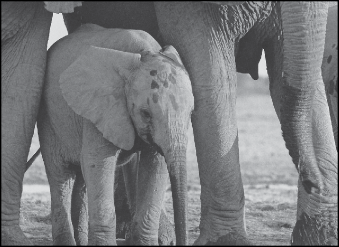
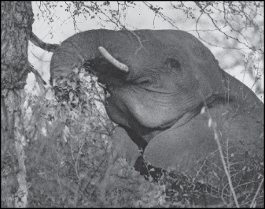
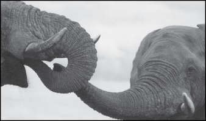
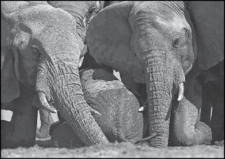

African elephants reign as the largest living land mammals in the world. Adult males, called bulls, typically weigh up to 14,000 pounds, and adult females, called cows, average about 7,000 pounds. The largest African elephant on record weighed an estimated 24,000 pounds—twelve tons— and stood thirteen feet high at his shoulders. That’s about twice as

tall as the average professional basketball player in America. Newborn elephants, called calves, tip the scales at anywhere from 110 to 260 pounds and stand at about three feet tall at the shoulders. Despite their enormous size, however, some elephants have been clocked running as fast as fifteen miles an hour, which is about the average top speed of physically fit men.
Photograph 1

A baby elephant fits under its mother’s belly for up to a year after birth.
To survive in the wild, elephants eat a healthy mix of foliage and may drink between thirty and fifty gallons of water a day—sometimes all in one drinking session, says Caitlin [O’Connell]. The plant-eating pachyderms (a term used for elephants that refers to their thick skin) dine on an average of 250 to 450 pounds of vegetation daily. Grass
makes up part of their diet during the rainy season, but elephants also eat shrubs, twigs, buds, pods, fruits, vegetables, shoots, roots, and tree bark.
Helping find all that food is an elephant’s versatile trunk—a unique appendage1 among living mammals. Comprising more than 40,000 muscles, this long fusion of nose and upper lip helps an elephant breathe, smell, drink, and explore objects. It’s so powerful that it can uproot a tree, yet nimble enough to grasp a nut or a berry, says Caitlin. When swimming, an elephant uses its trunk as a snorkel to take in and release air. Elephants also use their trunk to play, fight, comfort, and communicate with one another.
Along with its trunk, an elephant’s tusks aid in its daily quest for green cuisine. The spearlike extensions allow elephants to dig for food and water and to rip the bark from trees. Tusks are giant incisor teeth made of dentin or ivory—the same material that forms our teeth. They grow throughout an elephant’s life and can extend as long as eight feet and weigh more than two hundred pounds. In hostile situations, elephants use their tusks to fight with other elephants or to defend themselves and their calves against predators. Sadly, some people kill elephants for their tusks so that they can sell the ivory illegally. “A poor villager might do this for as little as five dollars of profit,” says Caitlin.
1appendage—a part of the body that projects outward

Elephants eat everything from grass to tree bark. When an elephant severely strips a tree of its bark, it eventually kills the tree.
When left to live out their natural lives, elephants generally grow to be about sixty-five years old. “It all depends on when they lose their teeth,” explains Caitlin. Elephants grow six sets of teeth during their lifetime, with one to two molars in place on each side of the top and bottom jaw at any one time. New teeth erupt at the back of the jaw and push the older ones forward. When the last set of teeth wears out and drops out of an elephant’s mouth, the elephant goes hungry and dies because it isn’t able to chew and consume enough food. . . .
SENSITIVE SOULS
Elephants may be big, but they’re remarkably delicate in many ways, says Caitlin. “Their wrinkly skin, for example, looks tough and
impenetrable, but it’s really sensitive.” To protect it from sunburns and insect bites, elephants spray themselves with water, roll in the mud, and dust their bodies with dirt. “The wrinkles help them stay cool,” notes Caitlin. When an elephant gets wet, water fills all its crinkly crevices, and the skin remains moist longer.

Elephants greet one another by placing their trunk in each other’s mouth. This important ritual is similar to a handshake.
Elephants are believed to be smarter than most mammals and to have longer-term memories, says Caitlin. Brain-size comparisons between large mammals show that elephants have an extra-large temporal lobe2—the area where sound cues are processed and within which is the hippocampus,3 where mammals form and store memories. This larger temporal lobe probably explains why more experienced matriarchs,4 who typically lead family groups, can readily distinguish the vocalizations of friends versus foes and recall where to find food and water during a drought.
Perhaps most striking—and the characteristic that intrigued Caitlin most early on—is that elephants are highly social animals that form lifelong relationships. They often engage in ritualistic5 behaviors that seem to mark special events. When a baby is born, or when they’re reunited with old friends, elephants will trumpet, scream, and roar wildly. “They’ll also use body language,” says Caitlin, who has since witnessed many such joyous occasions in her career. “They’ll flap their ears and embrace with their trunks,” she says. “Strangely, they’ll also pee and poop as part of the celebration.”
2temporal lobe—a part of the brain 3hippocampus—a part of the brain 4matriarchs—the female heads of families
5ritualistic—repetitive; in a manner suggesting an established process

Elephants use their trunk to rescue others from danger. In this case, a mother and sister come to the aid of a small calf that has fallen into a drinking trough.
As elephants travel across vast tracts of land, families frequently send vocal messages and coordinate their movements until they meet again. When a family member dies along the way, elephants become extremely curious about the remains. They’ve been observed lingering around a body for days, touching it with their feet, stroking it with their trunk, and even sometimes covering it with clumps of grass and other bits
of earth. They’re also curious about the skulls and bones of unrelated elephants and will often examine their remains extensively with their trunk and feet—even after the animal has been dead for some time.


An elephant matriarch’s long-term memory helps her distinguish the vocalizations of friends from those of unfamiliar elephants. It also enables her to remember migration paths and places to eat during droughts.
The more Caitlin learned about elephants, their relationships, and their strong bonds, the more intrigued she was with their world—and the stronger her desire to protect them.